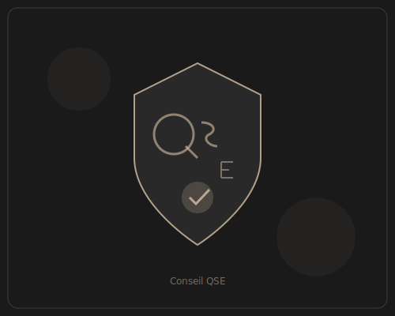

Qualité - Sécurité - Environnement
Conseil & Accompagnement QSE
Nous vous accompagnons dans la mise en place, l'amélioration et la certification de vos systèmes de management intégrés. Notre expertise couvre l'ensemble des référentiels ISO et les réglementations sectorielles.
- Diagnostic et gap analysis ISO 9001, 14001, 45001
- Mise en place de systèmes de management intégrés
- Préparation aux audits de certification
- Veille réglementaire et conformité